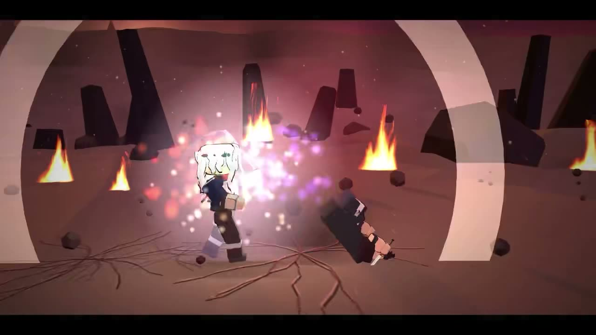

One world. Every path.
Shinobi Legacy is a 3D open-world ninja game that runs straight in your browser. No downloads, no install. Pick your village, forge your shinobi, and carve a name the world remembers.
 Intro cinematic
Intro cinematicOpen-world exploration
Roam a full 3D shinobi world built for the browser: village streets, training grounds, wild forests and forgotten ruins. Landmarks like the Hollow Ruins in Emberwood and the Sealing Crater hide quests, bosses and secrets worth finding.
- Five enterable villages
- Landmarks, ruins and hidden locations
- Runs on PC and phone

Intro cinematicCombat with real weight
Every move has cast flashes, trails and impact sparks keyed to your element. Bosses wind up with visible tells you can dodge, stagger under big hits, and change pace under half health.
- Jutsu with per-element VFX and SFX
- Hit-stop, camera shake and synthesized hits
- Dodge, block, combo and counter
 Intro cinematic
Intro cinematicClans & bloodlines
Choose from a deep clan roster, each with its own clan arts on Shift+1 through Shift+4, unlocked as clan mastery grows. Awakening eye lines like the Sharingan, Byakugan, Rinnegan and more each carry real abilities that drain your chakra while they're on.
- Every clan has its own 4-move clan bar
- Real eye abilities with costs
- Hidden clans exist in the world
 Intro cinematic
Intro cinematicJutsu, elements & transformation
Ten ability slots, elemental mastery, tailed-beast sync that cuts beast cooldowns by up to 45%, and transformations with their own cinematics and moves. Roll your nature from the spin, then master it.
- 10 ability slots with synced cooldowns
- Tailed beast inner realms per beast
- Transformation cinematics
 Intro cinematic
Intro cinematicCustomization & gear
Build your shinobi in the character creator with live 3D hair previews, then equip real 3D gear: masks, hats, hoods, cloaks, armor and weapons that show on your character for everyone and genuinely cut incoming damage.
- Full character creator
- 3D armor, masks, cloaks and weapons
- New gear slots: face, shoulders, arms, back